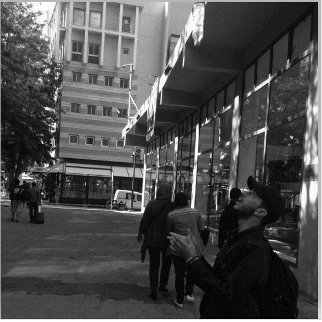

Mohamed Amine SALIM
I'm a Wagoner
Hello, this is a paragraphe of my first html file
See for yourselfMy Favorites Movies

|
Into The WildInto the Wild is a 2007 American biographical survival film written, co-produced, and directed by Sean Penn. It is an adaptation of Jon Krakauer's 1996 nonfiction book of the same name, based on the travels of Christopher McCandless across North America and his experiences in the Alaskan wilderness in the early 1990s |

|
The Pursuit of HappynessThe Pursuit of Happyness is a 2006 American biographical drama film based on entrepreneur Chris Gardner's nearly one-year struggle being homeless. Directed by Gabriele Muccino, the film features Will Smith as Gardner, a homeless salesman. |